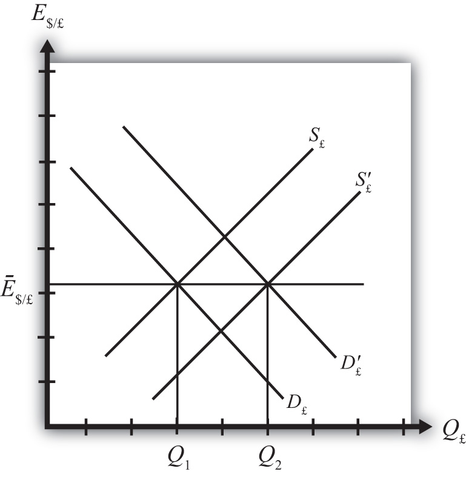
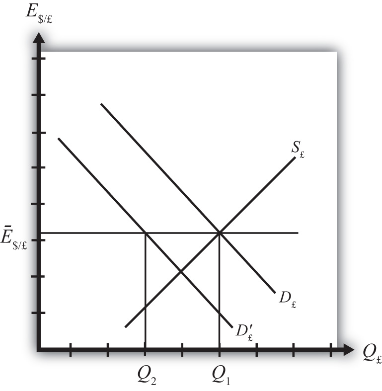

In a fixed exchange rate system, most of the transactions of one currency for another will take place in the private market among individuals, businesses, and international banks. However, by fixing the exchange rate the government would have declared illegal any transactions that do not occur at the announced rate. However, it is very unlikely that the announced fixed exchange rate will at all times equalize private demand for foreign currency with private supply. In a floating exchange rate system, the exchange rate adjusts to maintain the supply and demand balance. In a fixed exchange rate system, it becomes the responsibility of the central bank to maintain this balance.
The central bank can intervene in the private foreign exchange (Forex) market whenever needed by acting as a buyer and seller of currency of last resort. To see how this works, consider the following example.
Suppose the United States establishes a fixed exchange rate to the British pound at the rate Ē$/£. In Figure 22.1 "Central Bank Intervention to Maintain a Fixed Exchange Rate", we depict an initial private market Forex equilibrium in which the supply of pounds (S£) equals demand (D£) at the fixed exchange rate (Ē$/£). But suppose, for some unspecified reason, the demand for pounds on the private Forex rises one day to D′£.
Figure 22.1 Central Bank Intervention to Maintain a Fixed Exchange Rate
At the fixed exchange rate (Ē$/£), private market demand for pounds is now Q2, whereas supply of pounds is Q1. This means there is excess demand for pounds in exchange for U.S. dollars on the private Forex.
To maintain a credible fixed exchange rate, the U.S. central bank would immediately satisfy the excess demand by supplying additional pounds to the Forex market. That is, it sells pounds and buys dollars on the private Forex. This would cause a shift of the pound supply curve from S£ to S′£. In this way, the equilibrium exchange rate is automatically maintained at the fixed level.
Alternatively, consider Figure 22.2 "Another Central Bank Intervention to Maintain a Fixed Exchange Rate", in which again the supply of pounds (S£) equals demand (D£) at the fixed exchange rate (Ē$/£). Now suppose, for some unspecified reason, the demand for pounds on the private Forex falls one day to D′£. At the fixed exchange rate (Ē$/£), private market demand for pounds is now Q2, whereas supply of pounds is Q1. This means there is excess supply of pounds in exchange for U.S. dollars on the private Forex.
Figure 22.2 Another Central Bank Intervention to Maintain a Fixed Exchange Rate
In this case, an excess supply of pounds also means an excess demand for dollars in exchange for pounds. The U.S. central bank can satisfy the extra dollar demand by entering the Forex and selling dollars in exchange for pounds. This means it is supplying more dollars and demanding more pounds. This would cause a shift of the pound demand curve from D′£ back to D£. Since this intervention occurs immediately, the equilibrium exchange rate is automatically and always maintained at the fixed level.
Jeopardy Questions. As in the popular television game show, you are given an answer to a question and you must respond with the question. For example, if the answer is “a tax on imports,” then the correct question is “What is a tariff?”